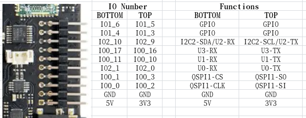

外设使用
更新历史
| 日期 | 版本 | 作者 | 更新内容 |
|---|---|---|---|
| 2023-05-08 | v1.0 | wonder |
|
SoC 相关
CPU 运行频率
sudo cat /sys/devices/system/cpu/cpu*/cpufreq/cpuinfo_cur_freq
单位为 KHz
注意系统自带温控策略，当系统过于空闲或者温度过高时，都会降频。请保持良好散热，使得 CPU 在 60 度以下，获得最佳性能。
芯片温度
cat /sys/class/thermal/thermal_zone0/temp
单位为0.001摄氏度
CPU超频
TH1520 默认最大运行频率为 1.85GHz，但是经过初步测试发现，有 80% 左右的芯片可以在 2GHz 运行，有 50% 左右的芯片可以在 2GHz 通过压力测试。
这里放出简易超频步骤，仅供参考，不对稳定性和安全性做保证。
查看/boot下的文件：
fw_dynamic.bin #opensbi
Image #kernel image
kernel-release #commit id of kernel
light_aon_fpga.bin #fw for E902 aon
light_c906_audio.bin #fw for C906 audio
light-lpi4a.dtb #1.85GHz dtb
light-lpi4a_2Ghz.dtb #2GHz overclock dtb
light-lpi4a-ddr2G.dtb #history dtb
将 light-lpi4a_2Ghz.dtb 拷贝覆盖为 light-lpi4a.dtb，重启，即可修改开机后的最大频率。
注意有一定几率这样修改后无法启动，此时需要重新烧录固件来恢复。
如果成功启动，则可以查看下面的数值确认是否已成功超频：
sudo cat /sys/devices/system/cpu/cpu0/cpufreq/cpuinfo_max_freq
PWM
以散热风扇所接的 PWM1 为例，可以通过如下代码进行风扇使能操作：
echo 1 > /sys/class/pwm/pwmchip0/export
echo 1000000 > /sys/class/pwm/pwmchip0/pwm1/period
echo 1000000 > /sys/class/pwm/pwmchip0/pwm1/duty_cycle
echo 1 > /sys/class/pwm/pwmchip0/pwm1/enable
GPIO
LicheePi 4A 板载 2x10pin 插针，其中有 16 个原生 IO，包括 6 个普通 IO，3 对串口，一个 SPI。
注意：SOC的所有原生IO均是1.8V电平，请注意电平转换。
插针上的串口输入侧已经进行了1/2分压处理，可以接3.3V的串口。
TH1520 SOC 具有4个GPIO bank，每个bank最大有32个IO：
| Bank | Address | kernel io num |
|---|---|---|
| GPIO0 | 0xffec005000 | 456-487 |
| GPIO1 | 0xffec006000 | 424-455 |
| GPIO2 | 0xffe7f34000 | 392-423 |
| GPIO3 | 0xffe7f38000 | 360-391 |
| AO_GPIO | 0xfffff41000 | 328-359 |
| AO_GPIO4 | 0xfffff52000 | 296-327 |
| AUDIO_GPIO | 0xffcb013000 | - |
其中 0x0 偏移处的 4Byte（32bit）是 GPIO 数据寄存器，0x4 偏移处的 4Byte（32bit）是 GPIO 方向寄存器
SOM 上的 GPIO 对应表格为：
| 名称 | GPIO |
|---|---|
| 01 | GPIO0_27 |
| 02 | GPIO0_28 |
| 03 | GPIO2_0 |
| 04 | AOGPIO4 |
| 05 | GPIO2_1 |
| 06 | GPIO1_22 |
| 07 | GPIO0_24 |
| 08 | GPIO0_25 |
| 09 | GPIO3_2 |
| 10 | GPIO3_3 |
| 11 | GPIO1_3 |
| 12 | GPIO1_4 |
| 13 | GPIO1_5 |
| 14 | GPIO1_6 |
LicheePi 4A上的插针的 GPIO 对应关系为：

以文档的标注为准，内测版的丝印标注可能有误
GPIO 操作：
注意，可能需要事先设置 pinmux
num=xxx
echo ${num} > /sys/class/gpio/export
echo out>/sys/class/gpio/gpio${num}/direction
echo 1 > /sys/class/gpio/gpio${num}/value
echo 0 > /sys/class/gpio/gpio{num}/value
也可以直接操作寄存器：
devmem 可以从此处下载编译：https://github.com/VCTLabs/devmem2/blob/master/devmem2.c
./devmem 0xffe7f38000 w
系统内GPIO信息查看：
sipeed@lpi4a:~$ sudo cat /sys/kernel/debug/gpio
下面是示例结果:

UART
系统串口
LicheePi 4A 的系统串口是 UART0,在侧边插针中有引出。
你可以使用 USB 转串口模块连接该串口，即 U0-RX 和 U0-TX，注意交叉连接，以及 GND 连接。

连接完成后，即可使用串口工具进行通信，Windows 下推荐 XShell，mobaterm，Linux下推荐 minicom
设置串口波特率为 115200，即可在串口终端下登录并进行指令操作：
注：刚连接后可以敲几个回车查看是否有反应，如果没有反应则检查接线或者串口配置

一般串口
LicheePi 4A的侧边插针中还引出了 UART1/2/3, 同样可以操作。
默认镜像中仅使能了 UART1, 其它串口可能需要重新配置设备树操作。
注意：SOC串口电平为1.8V，刚好处于3.3V的高电平阈值附近，可能某些串口模块无法正确输入输出，建议使用我们提供配套串口模块，或者微调其他串口模块的3.3V电压到2.8V
查看串口设备
ls /dev/ttyS*
查看串口的波特率等信息
stty -F /dev/ttyS1 -a
设置串口波特率、数据模式
stty -F /dev/ttyS1 ispeed 115200 ospeed 115200 cs8
查看串口数据
cat /dev/ttyS1
发送串口数据
echo "12345" > /dev/ttyS1
其它方法
也可以使用minicom，或者pyserial库进行串口操作，请用户自行查找相关资料使用。
I2C
LicheePi 4A 上有多个 I2C 设备（I2C0/1/2/3），其中 0/1/3 用于连接 I2C IO 扩展芯片，I2C2 预留在对外插针上。
这里我们使用 i2c-tools 来进行 i2c 验证操作，镜像默认预装了 i2c-tools:
sipeed@lpi4a:/usr$ ls /sbin/i2c*
/sbin/i2c-stub-from-dump /sbin/i2cdetect /sbin/i2cdump /sbin/i2cget /sbin/i2cset /sbin/i2ctransfer
列出所有I2C总线：
sipeed@lpi4a:~$ /sbin/i2cdetect -l
i2c-0 unknown Synopsys DesignWare I2C adapter N/A
i2c-1 unknown Synopsys DesignWare I2C adapter N/A
i2c-2 unknown Synopsys DesignWare I2C adapter N/A
i2c-3 unknown Synopsys DesignWare I2C adapter N/A
i2c-4 unknown Synopsys DesignWare I2C adapter N/A
i2c-5 unknown Synopsys DesignWare I2C adapter N/A
i2c-6 unknown Synopsys DesignWare I2C adapter N/A
i2c-7 unknown DesignWare HDMI N/A
检测 I2C 总线上的设备，可见 PCA9557PW 的 I2C 地址为 0x18，与原理图相符：
sipeed@lpi4a:~$ sudo /sbin/i2cdetect -r -y 0
0 1 2 3 4 5 6 7 8 9 a b c d e f
00: -- -- -- -- -- -- -- --
10: -- -- -- -- -- -- -- -- UU -- -- -- -- -- -- --
20: -- -- -- -- -- -- -- -- -- -- -- -- -- -- -- --
30: -- -- -- -- -- -- -- -- -- -- -- -- -- -- -- --
40: -- -- -- -- -- -- -- -- -- -- -- -- -- -- -- --
50: -- -- -- -- -- -- -- -- -- -- -- -- -- -- -- --
60: -- -- -- -- -- -- -- -- -- -- -- -- -- -- -- --
70: -- -- -- -- -- -- -- --

此外还可以使用 i2cdump 来 dump 指定 i2c 地址的所有寄存器，用 i2cget 来读出指定 i2c 地址的指定寄存器值，用 i2cset 来写入指定 i2c 地址的指定寄存器值。
不过由于 IO 扩展芯片已经被内核使用，所以无法直接使用这些命令验证。用户可以自行在 I2C2 上外接外设来验证。
SPI
LicheePi4A上预留了两路SPI，一路是背面空贴的SPI Flash焊盘，一路是插针上的SPI。
sipeed@lpi4a:~$ ls /dev/spidev2.0
/dev/spidev2.0
TODO
USB
TODO
USB SSD
USB 网卡
USB 摄像头
USB 声卡
ETH
LicheePi4A 具有双千兆网口，其中 Eth0 还具备 PoE 功能。
TODO
PoE
TODO
Audio
LicheePi 4A 上有两个模拟硅麦，使用 ES7210 CODEC，以及有一路板载的扬声器，和立体声耳机，使用 ES8156 CODEC。
注：板载扬声器与立体声耳机使用了互斥设计，插入耳机后，音频输出自动切换到耳机，板载扬声器失能。
使用 aplay 和 arecord 可以进行简易录放测试， 注意板载扬声器是右声道。
#!/bin/bash
echo "Play Test Audio"
aplay /usr/share/sounds/alsa/Side_Right.wav
# Record Audio
echo "Start record auido, auto replay after 3 seconds"
arecord -Dhw:0,1 -d 3 -r 48000 -f S16_LE -t wav test.wav & > /dev/null &
sleep 4
# Play Audio
aplay test.wav
echo "Start Play"
你还可以使用alsa相关工具，如alsamixer，进行音量调整等操作。
HDMI
注：早期镜像的HDMI音频不生效，请升级到较新版本使能HDMI音频功能。
MIPI CSI
LicheePi 4A 具有 CAM0/CAM1/CAM2 三个摄像头接口， CAM0 最大 4lane，CAM1/2 为 2lane，默认使用 CSI0 接口，接 OV5693 摄像头。
TODO
MIPI DSI
LicheePi 4A 具有 MIPI DSI0 接口，支持 4K 视频输出，可以选配 10.1 寸 1280x800 或者 1920x1200 的屏幕。
TODO
GPU
sudo watch cat /sys/kernel/debug/pvr/status
TODO
NPU
TODO
其它
欢迎投稿～ 投稿接受后可得￥5～150（$1~20）优惠券！